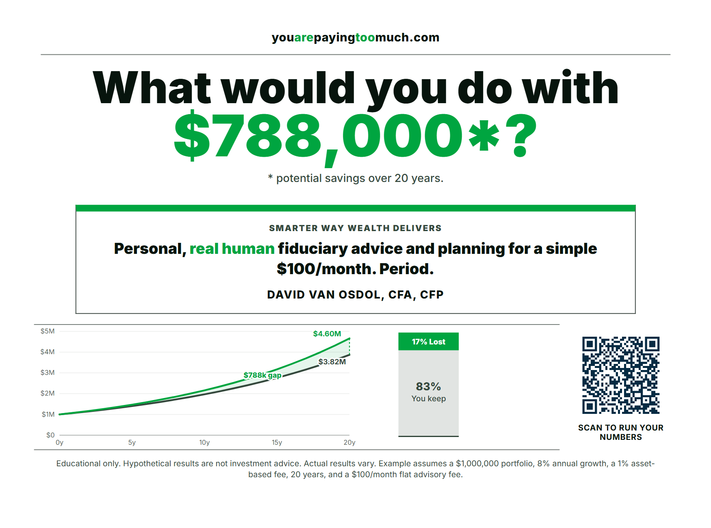
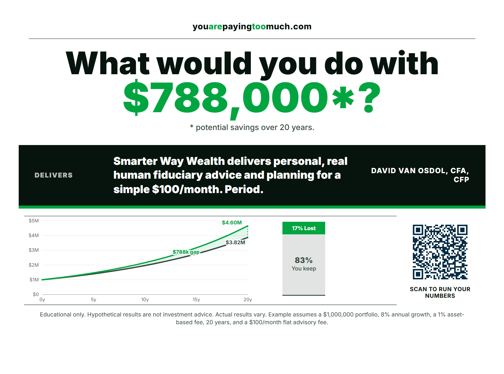
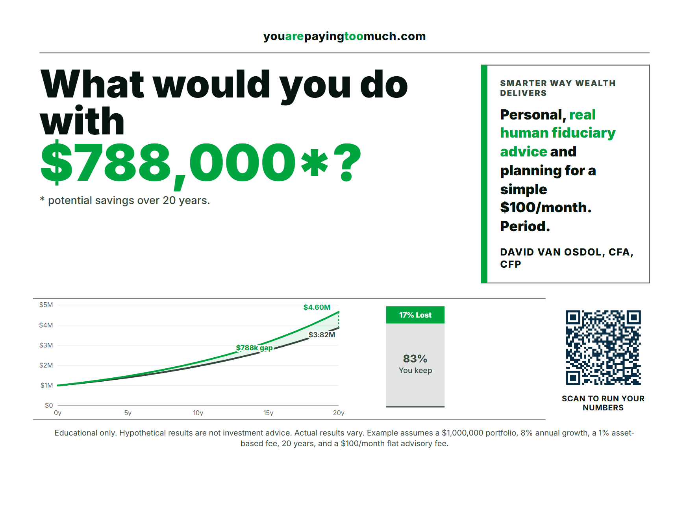

01. Proof Card
Founder proof copy becomes a bordered centerpiece under the headline.

02. Callout Band
Founder proof copy gets a high-contrast interrupting band.


03. Advisor Frame
Founder proof copy and byline live in a signature-style advisor panel.
